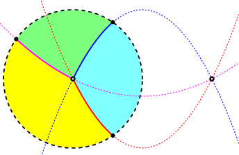

Pencils of QuadricsMichael DiPasquale, Frank Sottile, and Lanyin (Larry) Sun. |
Return to Semialgebraic Splines. |
| Four real finite points |
Four real points, two at infinity |
Two real two complex, all finite |
| Two complex points at infinity |
Two real and one double point |
 Two real and one double point at infinity |
| Two real double points |
Two real and one triple point at infinity |
|
| r\d | 0 | 1 | 2 | 3 | 4 | 5 | 6 | 7 | 8 | 9 | 10 | 11 | 12 | 13 | 14 | 15 | 16 | 17 | 18 | 19 | 20 | 21 | 22 | 23 | 24 | 25 | 26 | 27 | 28 | 29 | 30 | 31 | 32 | 33 | 34 | 35 | 36 | 37 | 38 | 39 | 40 |
|---|---|---|---|---|---|---|---|---|---|---|---|---|---|---|---|---|---|---|---|---|---|---|---|---|---|---|---|---|---|---|---|---|---|---|---|---|---|---|---|---|---|
| 0 | 1 | 3 | 7 | 13 | 22 | 34 | 49 | 67 | 88 | 112 | 139 | 169 | 202 | 238 | 277 | 319 | 364 | 412 | 463 | 517 | 574 | 634 | 697 | 763 | 832 | 904 | 979 | 1057 | 1138 | 1222 | 1309 | 1399 | 1492 | 1588 | 1687 | 1789 | 1894 | 2002 | 2113 | 2227 | 2344 |
| 1 | 1 | 3 | 6 | 10 | 15 | 21 | 30 | 42 | 57 | 75 | 96 | 120 | 147 | 177 | 210 | 246 | 285 | 327 | 372 | 420 | 471 | 525 | 582 | 642 | 705 | 771 | 840 | 912 | 987 | 1065 | 1146 | 1230 | 1317 | 1407 | 1500 | 1596 | 1695 | 1797 | 1902 | 2010 | 2121 |
| 2 | 1 | 3 | 6 | 10 | 15 | 21 | 28 | 36 | 46 | 58 | 73 | 91 | 112 | 136 | 163 | 193 | 226 | 262 | 301 | 343 | 388 | 436 | 487 | 541 | 598 | 658 | 721 | 787 | 856 | 928 | 1003 | 1081 | 1162 | 1246 | 1333 | 1423 | 1516 | 1612 | 1711 | 1813 | 1918 |
| 3 | 1 | 3 | 6 | 10 | 15 | 21 | 28 | 36 | 45 | 55 | 66 | 78 | 93 | 111 | 132 | 156 | 183 | 213 | 246 | 282 | 321 | 363 | 408 | 456 | 507 | 561 | 618 | 678 | 741 | 807 | 876 | 948 | 1023 | 1101 | 1182 | 1266 | 1353 | 1443 | 1536 | 1632 | 1731 |
| 4 | 1 | 3 | 6 | 10 | 15 | 21 | 28 | 36 | 45 | 55 | 66 | 78 | 91 | 105 | 121 | 139 | 160 | 184 | 211 | 241 | 274 | 310 | 349 | 391 | 436 | 484 | 535 | 589 | 646 | 706 | 769 | 835 | 904 | 976 | 1051 | 1129 | 1210 | 1294 | 1381 | 1471 | 1564 |
| 5 | 1 | 3 | 6 | 10 | 15 | 21 | 28 | 36 | 45 | 55 | 66 | 78 | 91 | 105 | 120 | 136 | 153 | 171 | 192 | 216 | 243 | 273 | 306 | 342 | 381 | 423 | 468 | 516 | 567 | 621 | 678 | 738 | 801 | 867 | 936 | 1008 | 1083 | 1161 | 1242 | 1326 | 1413 |
| 6 | 1 | 3 | 6 | 10 | 15 | 21 | 28 | 36 | 45 | 55 | 66 | 78 | 91 | 105 | 120 | 136 | 153 | 171 | 190 | 210 | 232 | 256 | 283 | 313 | 346 | 382 | 421 | 463 | 508 | 556 | 607 | 661 | 718 | 778 | 841 | 907 | 976 | 1048 | 1123 | 1201 | 1282 |
| 7 | 1 | 3 | 6 | 10 | 15 | 21 | 28 | 36 | 45 | 55 | 66 | 78 | 91 | 105 | 120 | 136 | 153 | 171 | 190 | 210 | 231 | 253 | 276 | 300 | 327 | 357 | 390 | 426 | 465 | 507 | 552 | 600 | 651 | 705 | 762 | 822 | 885 | 951 | 1020 | 1092 | 1167 |
| 8 | 1 | 3 | 6 | 10 | 15 | 21 | 28 | 36 | 45 | 55 | 66 | 78 | 91 | 105 | 120 | 136 | 153 | 171 | 190 | 210 | 231 | 253 | 276 | 300 | 325 | 351 | 379 | 409 | 442 | 478 | 517 | 559 | 604 | 652 | 703 | 757 | 814 | 874 | 937 | 1003 | 1072 |
| 9 | 1 | 3 | 6 | 10 | 15 | 21 | 28 | 36 | 45 | 55 | 66 | 78 | 91 | 105 | 120 | 136 | 153 | 171 | 190 | 210 | 231 | 253 | 276 | 300 | 325 | 351 | 378 | 406 | 435 | 465 | 498 | 534 | 573 | 615 | 660 | 708 | 759 | 813 | 870 | 930 | 993 |
| 10 | 1 | 3 | 6 | 10 | 15 | 21 | 28 | 36 | 45 | 55 | 66 | 78 | 91 | 105 | 120 | 136 | 153 | 171 | 190 | 210 | 231 | 253 | 276 | 300 | 325 | 351 | 378 | 406 | 435 | 465 | 496 | 528 | 562 | 598 | 637 | 679 | 724 | 772 | 823 | 877 | 934 |
| 11 | 1 | 3 | 6 | 10 | 15 | 21 | 28 | 36 | 45 | 55 | 66 | 78 | 91 | 105 | 120 | 136 | 153 | 171 | 190 | 210 | 231 | 253 | 276 | 300 | 325 | 351 | 378 | 406 | 435 | 465 | 496 | 528 | 561 | 595 | 630 | 666 | 705 | 747 | 792 | 840 | 891 |
| 12 | 1 | 3 | 6 | 10 | 15 | 21 | 28 | 36 | 45 | 55 | 66 | 78 | 91 | 105 | 120 | 136 | 153 | 171 | 190 | 210 | 231 | 253 | 276 | 300 | 325 | 351 | 378 | 406 | 435 | 465 | 496 | 528 | 561 | 595 | 630 | 666 | 703 | 741 | 781 | 823 | 868 |